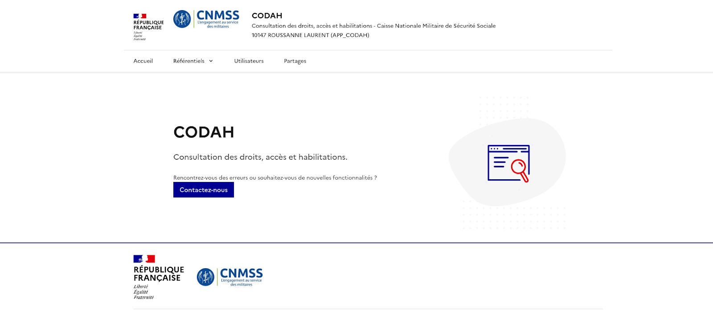
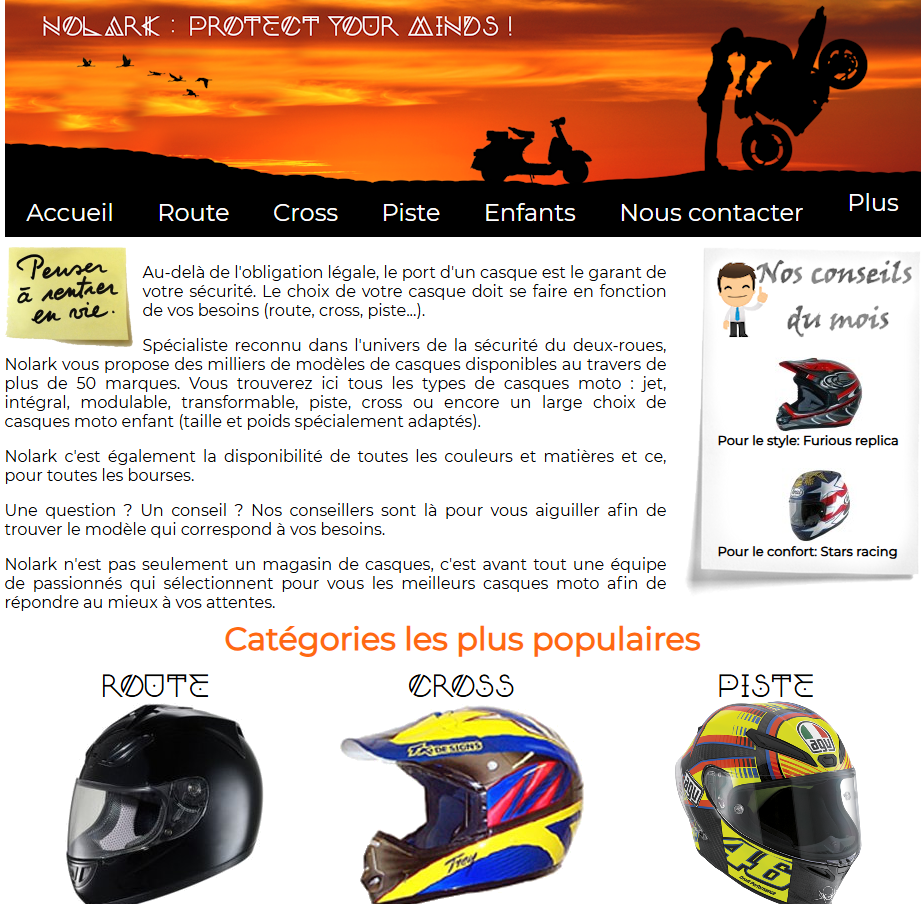

Dylan
Développeur Web & Applications|

Bonjour , je m'appelle Dylan je suis un etudiant en bts sio 2 eme année . Je suis un passsioné d'informatique et voici mon portfolio
Télécharger CVCompétences professionel
Compétences
Voici les compétences acquises tout au long de mon parcours informatique
Parcours & Formations
Mon parcours académique et professionnel dans le développement informatique.
BTS SIO option SLAM - 2ème année
Lycée Bonaparte, Toulon Septembre 2024 - À ce jourFormation initiale spécialisée en Solutions Logicielles et Applications Métiers.
BTS SIO option SLAM - 1ère année
Lycée Bonaparte, Toulon Septembre 2023 - Juin 2024Première année de formation en BTS SIO, option SLAM, en initial.
Terminale Technologique STI2D - Option SIN
Lycée Adam de Craponne, Salon-de-Provence Septembre 2022 - Juin 2023Baccalauréat Technologique mention Assez Bien.
Première Technologique STI2D - Option SIN
Lycée Adam de Craponne, Salon-de-Provence Septembre 2021 - Juin 2022Première année en série technologique STI2D, spécialité Systèmes d'Information et Numérique.
Seconde Générale
Lycée Jean Cocteau, Miramas Septembre 2020 - Juin 2021Découverte des enseignements de spécialité en vue d’une orientation vers la voie technologique.
Collège
Collège La Carraire, Miramas Septembre 2014 - Juin 2018Diplôme National du Brevet (DNB) — Parcours général.
Expériences Professionnelles
Mes expériences en tant que développeur
Développeur Informatique
Mai - Juin 2024 (2 mois)
- Découverte de l'environnement de développement
- Participation à des projets de développement d'applications internes
- Apprentissage des méthodes de travail en équipe
- Initiation aux bonnes pratiques de développement
Stagiaire Développeur
2024 - À ce jour
- Création et gestion de sites internet via des CMS (WordPress, Joomla)
- Personnalisation de thèmes et plugins selon les besoins clients
- Intégration de maquettes web responsive
- Support client et maintenance des sites
- Optimisation SEO de base
Projets & Réalisations
Découvrez mes projets réalisés en formation et en entreprise.
Codah
EntrepriseApplication de consultation des droits, accès et habilitations.

- Recherche par utilisateur et département.
- Accès aux référentiels multiples.
- + 2 autres fonctionnalités...
Technos : PHP, Symfony
Référentiel BTS SIO :
- B1.1, B1.2, B1.3, B1.4, B1.5
FIB
EntrepriseFichier d’implémentations bancaires (Banque de France).

- Recherche par code banque ou guichet.
- Fusion automatique des fichiers.
- + 1 autre fonctionnalité...
Technos : PHP, Symfony
Référentiel BTS SIO :
- B1.1, B1.2, B1.3, B1.4, B1.5
Restauration BDD en PHP 5.5
FormationScript de restauration automatique d’une base en cas de problème.

- PHP 5.5 + MySQL.
- Gestion erreurs/exceptions.
- Processus automatisé.
Technos : PHP 5.5, MySQL
Référentiel BTS SIO :
- B1.1, B1.2, B1.5
GSB
FormationApplication de gestion des frais (visiteurs médicaux).

- Authentification sécurisée.
- Gestion utilisateurs & frais.
- + 2 autres fonctionnalités...
Technos : PHP, Symfony
Référentiel BTS SIO :
- B1.1 → B1.6
Nolark
FormationSite e-commerce de casques moto.

- HTML, CSS, JavaScript responsive.
- Formulaire de contact sécurisé.
- + 2 autres fonctionnalités...
Technos : HTML, CSS, JS
CGB
FormationSite e-commerce de casques moto.

- HTML, CSS, JavaScript responsive.
- Formulaire de contact sécurisé.
- + 2 autres fonctionnalités...
Technos : HTML, CSS, JS
Langages de Programmation
-
 JavaScript
JavaScript
-
 Python
Python
-
 PHP
PHP
-
 C#
C#
-
 VBA
VBA
-
 Java
Java
-
 HTML & CSS
HTML & CSS
Frameworks & BDD
-
 Symfony
Symfony
-
 MySQL
MySQL
Outils
-
 Git / GitHub
Git / GitHub
-
 Linux
Linux
-
 Visual Studio Code
Visual Studio Code
-
 NetBeans
NetBeans